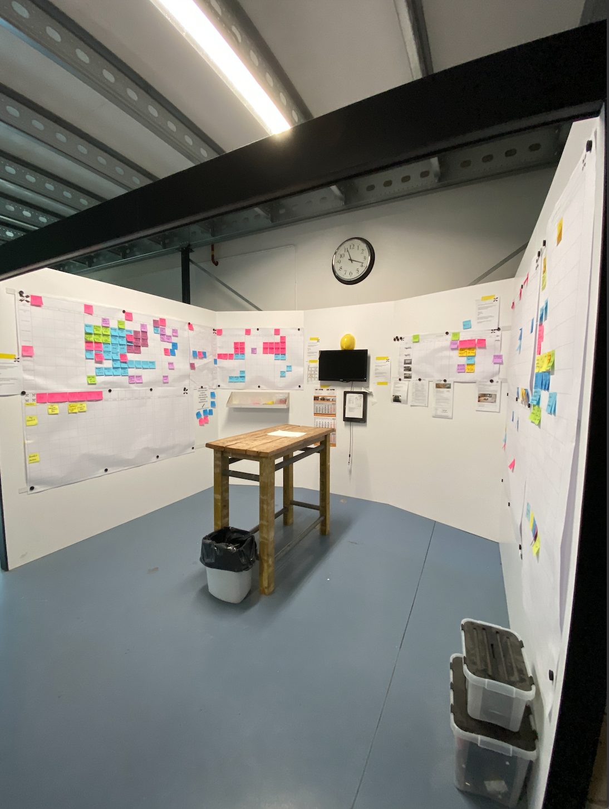
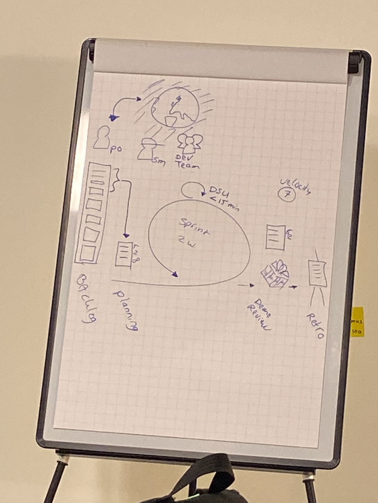

Week 4: Processen
introductie
In week 4 stond de eerste excursie op het programma. Verder was er een les van Smart Start, Connection en Technology. Processen stonden centraal deze week. We leerden over Agile en Scrum bij Elk en simulatie stond centraal bij Smart Start, maar hier ga ik hieronder over verder. Bij Smart Connection gingen we verder met het onderwerp online databases en Bij Smart Technology gingen we het pompje aansluiten. Over de laatste twee lessen volgt hieronder geen verdere informatie omdat dat niet nodig is. Wel heb ik een foto van het pompje dat water omhoog pompt.

Bezoek Elk
We gingen met de gehele minor op bezoek bij Elk. Elk is een totaal onderhoudsbedrijf gelegen tussen Nijmegen en Wijchen in op bedrijventerrein Bijsterhuizen. We gingen bij Elk langs omdat de organisatie en dagelijkse routine goed ingericht zijn volgens de Scrum en Agile methodes. We kregen een rondleiding door het bedrijf en kregen uitleg over de dagelijkse meetings die gehouden werden. Ik heb tijdens mijn studie al kennisgemaakt met Scrum dus het was niet nieuw voor mij. Verder werd er bij Elk op locatie een Agile/Scrum training gegeven door Ali Hajou. Hij gaf ons duidelijke uitleg met voorbeelden hoe je slim deze techniek kon toepassen. Hierna deden we nog een spel over projectmatig werken via Agile. We werkte via sprints steeds aan het bouwen van verschillende feestartikelen. Je bepaalde van tevoren welke je ging doen zodat je goed planmatig bezig was. Ook was er een PO in het team die bepaalde welke acties werden uitgevoerd. Hieronder links zie je het scrumboard beneden voor de monteurs. Rechts is de uitleg van Ali over Agile werken.
 Smart Start
Tijdens de les van Smart Start gingen we kijken naar verschillende simulatiemethodes. Een mooi voorbeeld wat naar voren kwam is de Monte Carlo-simulatie, dit werd uitgebeeld met het oud programma ‘Let’s make a deal’. Het was interessant om te zien dat wisselen van deur statistisch gezien een betere optie was. Ook gingen we een dobbelsimulatie uitoefen om de wachttijd in een ziekenhuis te berekenen.
Als weekopdracht moesten we het volgende uitwerken: Illustreer via een casus wat Smart Industry betekent in termen van Lean en Agile. Gebruik de middelen die tijdens de workshop zijn aangereikt.
de opdracht is hieronder weergegeven.
Smart Industry in termen van Lean & Agile
Tijdens de workshops bij ELK is veel informatie naar voren gekomen over Lean en Agile werken. Dit zijn twee bedrijfsvoeringen die op dit moment veel toegepast worden in het bedrijfsleven. Aan de studenten de taak om Lean en Agile te koppelen aan Smart Industry door middel van een Casus.
Inleiding
Voordat ik het verband ga uitleggen tussen de begrippen wil ik eerst even uitleg geven over de begrippen, te beginnen met Lean. Een Lean bedrijfsvoering is een manier van werken dat je zoveel mogelijk klantwaarde wil creëren voor de klant. Door de klant centraal te zetten creëer je maximale toegevoegde waarde voor de klant tegen minimalen inspanning. De kwaliteit van het product en je proces wordt verbeterd, de doorlooptijd wordt verkort en de kosten worden verlaagd (Leansixsigma, 2019). Agile is een manier van werken binnen een project. Er worden klein sprints gehouden van maximaal 2-4 weken. Hierbij werk je met het projectteam aan een geselecteerd aantal bezigheden tijdens de sprint. Na de sprint wordt teruggekeken op het behaalde resultaat en wordt er indien nodig gereviseerd. Door steeds kleine sprints te houden worden grote projecten behapbaar en kunnen onverwachte wijzigingen beter verteerd worden (Leansixsigma, 2019). Lean en Agile zijn twee manieren die vaak samen gebruikt worden bij bedrijven. Vaak worden Lean tools gebruikt in een Agile format. Denk hierbij aan verschillende stappen in een DMAIC-project die ongeveer 2-4 weken duren.
Casus
Om Smart industry met de hierboven uitgelegde bedrijfsvoeringen de koppelen wordt een casus over De Croimvoirtse gebruikt van procesverbeteren.nl. Deze organisatie van Jaap van Ede schrijft artikelen en casussen over hoe het bedrijfsleven Smart technieken toepast in haar bedrijfsvoering (Ede, 2015). De Croimvoirtse in Oisterwijk is een metaalbewerkingsbedrijf dat al veel Industry 4.0 technieken heeft toegepast in zijn productie. Hierdoor kan de klant via een onlinedatabase eenvoudig producten bestellen. Via een webportaal omschrijft een klant de gewenste metaaldelen, en keurt de klant de offerte daarna goed, dan wordt het artikel de volgende nacht gemaakt en direct daarna afgeleverd. Dit hele proces verloopt bijna mens loos en zonder wachttijden. Het perfecte voorbeeld van Lean produceren met een Smart Industry idee. Smart Industry kan Lean productie echter niet alleen flexibeler maken, maar ook bijdragen aan procesverbetering. Steeds meer bedrijven en ook De Croimvoirtse werken naar een ideale situatie waarbij kleine ‘fabriekjes’ binnen het productieproces autonoom bepalen waar het product onderdelen of bewerking nodig heeft. Dit wordt dan gedaan door AGV’s die halffabricaten transporteren tussen werkstations. Hierbij is er dus niet een directe flow door het fabriek maar worden producten gemaakt op vraag van de klant (Ede, 2019)
Conclusie
Kortom is Smart Industry dus een manier om de Lean en Agile bedrijfsvoering te verbeteren. Bedrijven worden zelfbewust, efficiënt (Lean), flexibel (Agile) en schaalbaar. Hierbij worden waardenketens intelligent in zelfdenkend.